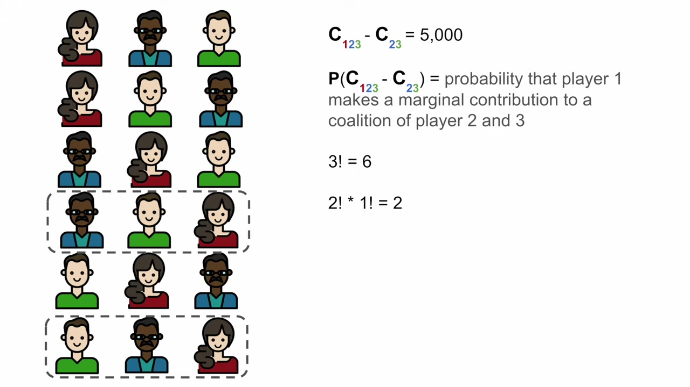

Shapley Values: Work Out Each Person’s Share
Companion to A Data Odyssey’s video · Conor O’Sullivan
We have seen a prediction divided into feature contributions. To understand how that division is chosen, start with something simpler: two people who enter a competition together and win 10,000 dollars. How much should each person receive?
The playlist uses a Kaggle competition for this example. Call the teammates A and B. Suppose we know that A would win 7,500 alone and B would win 5,000 alone. Together they win 10,000; with neither person participating, the winnings are zero. We take these four amounts as the rules of this example.
Why one contribution is not enough
| Team | Winnings |
|---|---|
| Nobody | 0 |
| A alone | 7,500 |
| B alone | 5,000 |
| A and B | 10,000 |
If A joins an empty team, the winnings rise from zero to 7,500. If A joins a team that already contains B, the winnings rise from 5,000 to 10,000, an increase of only 5,000. Both increases describe A’s contribution, but in different circumstances.
This increase is called a marginal contribution: the team’s value after someone joins, minus its value before they join. The word “marginal” refers to that additional amount. It does not mean the amount is small.
Giving each person their solo winnings would distribute 12,500, even though the team won only 10,000. Giving each person only what they add when joining last would distribute 5,000 + 2,500 = 7,500. Neither calculation accounts for the whole prize correctly.
Average both possible joining orders
There are two ways to build the full team. A can arrive before B, or B can arrive before A. In each order, give the arriving person the increase they produce at that moment.
| Order | A receives in this order | B receives in this order |
|---|---|---|
| A → B | 7,500 − 0 = 7,500 | 10,000 − 7,500 = 2,500 |
| B → A | 10,000 − 5,000 = 5,000 | 5,000 − 0 = 5,000 |
This order gives A 7,500 and B 2,500. Each order distributes the same 10,000.
The Shapley rule treats the two orders equally. A receives the average of 7,500 and 5,000, which is 6,250. B receives the average of 2,500 and 5,000, which is 3,750. These amounts add to the full 10,000.
That is the central calculation: record what each participant adds in every possible joining order, then average their recorded contributions. A team or group of participants is also called a coalition. We will use that word when writing the formula, but it still means a group.
A third person reveals where the weights come from
Now use the video’s separate three-person contest. Its winnings table is different: A and B each win 5,000 alone, while C wins nothing alone. Do not carry A’s 7,500 solo amount over from the previous example.
| Team | Winnings | Team | Winnings |
|---|---|---|---|
| Nobody | 0 | A and B | 7,500 |
| A | 5,000 | A and C | 7,500 |
| B | 5,000 | B and C | 5,000 |
| C | 0 | A, B, and C | 10,000 |
Three people can arrive in six different orders. Apply the same subtraction at each arrival:
| Joining order | A’s contribution | B’s contribution | C’s contribution |
|---|---|---|---|
| A → B → C | 5,000 | 2,500 | 2,500 |
| A → C → B | 5,000 | 2,500 | 2,500 |
| B → A → C | 2,500 | 5,000 | 2,500 |
| B → C → A | 5,000 | 5,000 | 0 |
| C → A → B | 7,500 | 2,500 | 0 |
| C → B → A | 5,000 | 5,000 | 0 |
| Average | 5,000 | 3,750 | 1,250 |
For example, in C → A → B, C produces zero, A raises the winnings from zero to 7,500, and B raises them from 7,500 to 10,000. Each row still distributes exactly 10,000. Averaging the rows preserves that total.
C receives 1,250 even though C wins nothing alone. That makes sense under this rule: C improves some teams. A feature can likewise matter through combinations even when its effect in isolation is small.
Equal orders do not mean equal groups
Focus only on A. A might arrive after nobody, after B, after C, or after both B and C. These four possibilities do not occur equally often in the six orders.
| People already present | Orders with this preceding group | A’s increase | Weight |
|---|---|---|---|
| Nobody | A → B → C; A → C → B | 5,000 | 2/6 |
| B only | B → A → C | 2,500 | 1/6 |
| C only | C → A → B | 7,500 | 1/6 |
| B and C | B → C → A; C → B → A | 5,000 | 2/6 |
A therefore receives (2 × 5,000 + 2,500 + 7,500 + 2 × 5,000) / 6 = 5,000. We have simply grouped identical contributions instead of writing out all six orders. This explains why the usual formula is a weighted average over groups.


Write the same calculation as a formula
Let $N$ be the set of all participants and $M$ their number. Let $i$ be the person whose share we want. A group $S$ contains some of the other people, but not $i$. Write $v(S)$ for that group’s winnings. The number of people in $S$ is written $|S|$.
For a particular group $S$ to appear immediately before $i$, its members can be arranged in $|S|!$ ways. Put $i$ next. The remaining $M-|S|-1$ people can then be arranged in $(M-|S|-1)!$ ways. There are $M!$ orders altogether. Here $!$ means factorial: for example, $3!=3\times2\times1=6$, and $0!=1$.
Read the expression from the inside out. The square bracket is the increase when $i$ joins. The fraction is the proportion of arrival orders with exactly $S$ before $i$. The sum adds the weighted increases over every possible preceding group. The symbol $\phi_i$, pronounced “phi i,” names the resulting Shapley value.
What makes this a fair allocation?
“Fair” here has a precise meaning. The Shapley rule satisfies four requirements for a fixed table of group values:
| Requirement | Plain meaning |
|---|---|
| Efficiency | Distribute the full difference between the complete group and the empty group. |
| Symmetry | Give the same share to participants who contribute identically in every comparable situation. |
| Null player | Give zero to a participant who never changes any group’s value. |
| Additivity | If we add two tables of group values, each person’s new share is the sum of their shares in the two tables. |
These requirements characterize the Shapley allocation. Additivity is a mathematical property of adding games; it does not require a statistical independence assumption. And fairness of this allocation rule does not settle whether the original winnings table, or a model using it, is socially fair.
The exact-arithmetic script reproduces both examples and verifies their totals. The saved calculations include every order. We can now take the same rule back to machine learning. The new challenge is deciding what a prediction means when only some feature values are known.